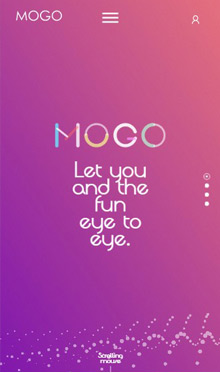
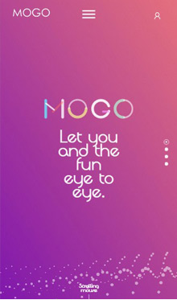

- 人才缺口巨大
- 薪资不断攀高
- 发展潜力无限
名企招聘多:
通常小公司对技术要求不高，没有专门的移动前端开发岗位需求。但在互联网大公司，对技术的要求高，岗位与职责更加细化和明确，随着互联网的发展和用户体验的更加重视，HTML5工程师的需求也越来越大，因此，HTML5工程师进的都是互联网大公司，具有很大的发展空间。
你对HTML5了解多少？
什么是HTML5？
万维网的核心语言、超文本标记语言（HTML）的第五次重大修改。HTML5 已经于2014年10月正式定稿。然而，大部分现代浏览器已经具备了某些HTML5支持。HTML5是web时代最前沿的技术，它特有canvas标签和多种选择的游戏开发引擎，让游戏开发更便捷。如果说苹果重新发明了手机，那么HTML5则重新定义了网络。它是链接手机、平板电脑、PC以及其他移动终端的桥梁，可以更丰富地展现页面，让视频、音频、游戏以及其他元素构成一场华丽的代码盛宴。
HTML5发展前景？
HTML5是WEB的未来，不仅在电脑端，而且在移动端也一定会得到广泛的应用。 据统计2013年全球将有10亿手机浏览器支持HTML5，同时HTML Web开发者数量将达到200万。毫无疑问，HTML5将成为未来5-10年内，移动互联网领域的主宰者。 据IDC的调查报告统计，截至2012年5月，有79%的移动开发商已经决定要在其应有程序中整合HTML5技术。 WEB技术发展越来越迅速，HTML5的到来更是把WEB技术推向了巅峰，目前HTML5技术已经日趋成熟，HTML5的未来十分光明，值得我们去学习。
HTML5可以做什么？
除了实现之前HTML可以实现的功能外,HTML5做以下特别的事情： 1、本地存储 基于HTML5开发的网页APP拥有更短的启动时间，更快的联网速度，这些全得益于HTML5 APP Cache，以及本地存储功能。 2、实现多媒体更加简单 利用HTML5的video和audio非常方便的在网页上添加视频和音频，不需要很复杂的代码，就能打造一款功能齐全的HTML5播放器。3、三维图形和动画 HTML5的3D引擎却可以更方便的实现3D效果，而且更加逼真。 4、CSS3的运用 CSS3提供更多的CSS属性，可以做更丰富的渲染效果。
HTML5的优势？
1.一次编写，随处部署--HTMl5可以在多种设备上运行，这是其他方式都无法做到的。2.在互联网中分享--HTML5应用都有一个URL，因此它可以在互联网中被随意分享，并且在搜索时即可被找到。3.多厂商标准，建立在协议之上--HTML5是众多公司努力的结果，没有一家厂商可以左右它的方向。4.适用于多种环境--HTML5应用可以使用交互式设计来提供最佳体验，而不需要更改代码。你可以从桌面到手机到平板电脑无缝进行切换，而无需重复安装不同的应用。
一直被模仿 从未被超越
越来越多的培训机构增加HTML5培训项目如何规避行业就业饱和问题？不谈规避，只说一句新技能前端工程师永远有饭吃！HTML5培训课程业内率先全面升级跨越初级入门 直逼中高级前端工程师8周>4个月>4年很多学员对混合式开发的定义并不了解，要知道，混合式开发对讲师和课程安排的要求极高，一般来说，完成真的的混合式开发培训并前，混合式开发更多情况下成了噱头！学邦HTML5培训前8周涵盖普通授课4个月全部内容再给自己一次奋斗的机会，哪怕已经懒散了4年！2.X版本课程详解来自一线的前端工程师倾情授课如你所见，“大牛”心血共筑全新课程大纲技术内容全面 混合式开发全新登场学邦HTML5课程全面升级涵盖PC terminal、Mobile terminal、HybridApp开发课程体系4个月，轻松掌握web端开发+HTML5技能
实战技能的优势 · 项目教学法 · 学习同时攒经验
18周 =WEB前端开发技能 + 移动前端开发技能 + 1年经验· 第一阶段PC端页面重构· 第二阶段PC端交互开发原生js+jquery· 第三阶段移动端页面开发+响应式布局· 第四阶段微信场景开发+公众号开发+游戏开发
企业用人趋势
企业现在安卓、iOS开发人员都在学习HTML5混合开发，节约成本、一专多能是未来很多企业用人趋势！HTML5工程师在今后的工作中与Android、iOS工程师对接的几率非常大，如果你是面试官，你会选择要一个只懂HTML5的人还是选择要一个精通HTML5+app开发解决方案的人？
更高的就业薪水
HTML5+APP解决方案培训出来的学员比单一课程学员薪水高至少2000元，同时企业也更愿意去花更多的钱来聘请那些了解比较全面的开发人员！
PC端 APP 轻应用 桌面应用
学邦 HTML5项目全部来自于真实的企业项目，单独项目代码量超过5万行。 为了让学员尽快的进入到企业开发的项目中，学邦使用自主开发的产品和为客户定制的企业产品为案例。

 

移动互联网培训开拓者
专注 iOS、Android 、HTML5、UI、PHP等技术研 发培训，坚持“教育强国、助学兴邦”的理念